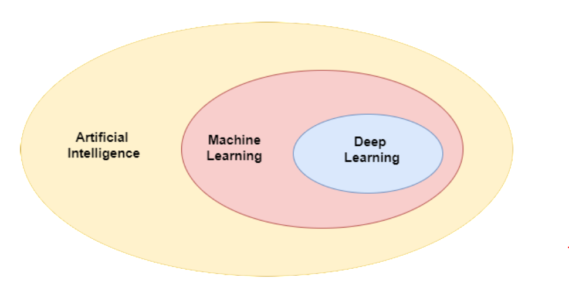
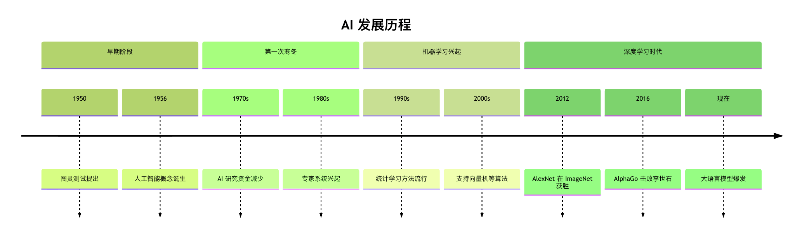

機械学習と人工知能
人工知能、機械学習、ディープラーニングの関係
ロシアのマトリョーシカ人形を想像してみてください。大きな人形の中に中くらいの人形が入っていて、中くらいの人形の中に小さな人形が入っています。人工知能、機械学習、ディープラーニングの関係もこれに似ています：
- 人工知能（AI）：一番大きな人形、最も広い概念
- 機械学習（ML）：中くらいの人形、AIの一部
- ディープラーニング（DL）：一番小さな人形、機械学習の一部

人工知能（AI）とは？
人工知能は広い概念であり、機械に人間のような知能を発揮させる技術を指します。人間の知能が推論、学習、知覚、言語理解などの能力を含むように、AIも機械にこれらの能力を持たせようとします。
AIの目標：
- 人間の思考プロセスを模倣する
- 人間の知能が必要なタスクを解決する
- 特定の分野で人間の能力を超える
AIの例：
- チェスや囲碁のプログラム（例：AlphaGo）
- 音声アシスタント（例：Siri、小愛同学）
- 自動運転車
AIにおける機械学習（ML）の位置づけ
機械学習は人工知能を実現する一つの方法であり、唯一の方法ではありません。料理に様々な方法がある（炒める、煮る、蒸す、焼く）ように、AIを実現する方法も様々です。
機械学習の特徴：
- すべてのルールを人手で書く必要がない
- データから自動的に法則を学習する
- 複雑でルールが明確になりにくい問題の処理に適している
従来のAI vs 機械学習：
| 従来のAI手法 | 機械学習手法 |
|---|---|
| エキスパートシステム：人手でルールを作成 | データからルールを学習 |
| 論理的推論：明確なルールに基づく | パターン認識：データから法則を見つける |
| ルールが明確な問題に適している | 複雑で曖昧な問題に適している |
ディープラーニング（DL）と機械学習
ディープラーニングは機械学習の一分野であり、多層ニューラルネットワークを使用してデータ内の複雑なパターンを学習します。
ディープラーニングの特徴：
- 多層ニューラルネットワークを使用する（「深い」とは層の数が多いことを指す）
- 画像、音声、テキストなどの非構造化データの処理に特に適している
- 大量のデータと計算リソースが必要
発展の歴史と進化

- 初期のAI（1950年代〜1970年代）：主に人手で書かれたルールと論理的推論に依存
- 機械学習の台頭（1980年代〜2000年代）：データから学習し始めるが、特徴量は人手による設計が必要
- ディープラーニングの時代（2010年代〜現在）：特徴量を自動学習し、より複雑な問題を処理する

実例
従来の方法、機械学習、ディープラーニングの違いを示すために、手書き数字の認識を試みる簡単な例を見てみましょう。
方法1：従来の方法（ルールベース）
実例
# 従来の方法：人手で設計したルールに基づいて手書き数字を認識する
# これはあくまで概念的な例であり、実際にはこの方法の効果は非常に低い
def recognize_digit_by_rules(image):
"""
人手のルールに基づく数字認識（簡略化した例）
"""
# ルール1：画像内の黒いピクセル数を計算する
black_pixels = count_black_pixels(image)
# ルール2：画像の重心位置を計算する
center_x, center_y = calculate_center(image)
# ルール3：特定の形状特徴を検出する
has_circle = detect_circle(image)
has_straight_line = detect_straight_line(image)
# ルールに基づいて判断する
if has_circle and black_pixels < 50:
return "0"
elif has_straight_line and center_y < image_height/2:
return "7"
# ... さらに多くのルール
else:
return "認識できません"
# 問題：ルールですべてのケースを網羅するのは難しく、非常に脆弱である
# これはあくまで概念的な例であり、実際にはこの方法の効果は非常に低い
def recognize_digit_by_rules(image):
"""
人手のルールに基づく数字認識（簡略化した例）
"""
# ルール1：画像内の黒いピクセル数を計算する
black_pixels = count_black_pixels(image)
# ルール2：画像の重心位置を計算する
center_x, center_y = calculate_center(image)
# ルール3：特定の形状特徴を検出する
has_circle = detect_circle(image)
has_straight_line = detect_straight_line(image)
# ルールに基づいて判断する
if has_circle and black_pixels < 50:
return "0"
elif has_straight_line and center_y < image_height/2:
return "7"
# ... さらに多くのルール
else:
return "認識できません"
# 問題：ルールですべてのケースを網羅するのは難しく、非常に脆弱である
方法2：機械学習の方法
実例
# 機械学習の方法：従来の特徴抽出 + 分類器を使用する
from sklearn.ensemble import RandomForestClassifier
from sklearn.metrics import accuracy_score
# 1. 人手で特徴量を設計する（これは従来の機械学習の限界である）
def extract_features(image):
"""
人手による特徴量設計
"""
features = []
# 特徴1：黒いピクセルの割合
features.append(count_black_pixels(image) / total_pixels)
# 特徴2：画像の重心
center_x, center_y = calculate_center(image)
features.extend([center_x, center_y])
# 特徴3：エッジ密度
features.append(calculate_edge_density(image))
# ... さらに多くの手作業による特徴量
return features
# 2. すべてのトレーニングデータの特徴量を抽出する
X_train = [extract_features(img) for img in train_images]
y_train = train_labels
# 3. モデルをトレーニングする
model = RandomForestClassifier(n_estimators=100)
model.fit(X_train, y_train)
# 4. テストする
X_test = [extract_features(img) for img in test_images]
predictions = model.predict(X_test)
print(f"正解率：{accuracy_score(test_labels, predictions):.2f}")
from sklearn.ensemble import RandomForestClassifier
from sklearn.metrics import accuracy_score
# 1. 人手で特徴量を設計する（これは従来の機械学習の限界である）
def extract_features(image):
"""
人手による特徴量設計
"""
features = []
# 特徴1：黒いピクセルの割合
features.append(count_black_pixels(image) / total_pixels)
# 特徴2：画像の重心
center_x, center_y = calculate_center(image)
features.extend([center_x, center_y])
# 特徴3：エッジ密度
features.append(calculate_edge_density(image))
# ... さらに多くの手作業による特徴量
return features
# 2. すべてのトレーニングデータの特徴量を抽出する
X_train = [extract_features(img) for img in train_images]
y_train = train_labels
# 3. モデルをトレーニングする
model = RandomForestClassifier(n_estimators=100)
model.fit(X_train, y_train)
# 4. テストする
X_test = [extract_features(img) for img in test_images]
predictions = model.predict(X_test)
print(f"正解率：{accuracy_score(test_labels, predictions):.2f}")
方法3：ディープラーニングの方法
実例
# ディープラーニングの方法：エンドツーエンド学習、特徴量を自動抽出する
import tensorflow as tf
from tensorflow.keras import layers, models
# 1. ニューラルネットワークを構築する
model = models.Sequential([
# 低レベルの特徴を自動学習する（エッジ、テクスチャなど）
layers.Conv2D(32, (3, 3), activation='relu', input_shape=(28, 28, 1)),
layers.MaxPooling2D((2, 2)),
# 中レベルの特徴を自動学習する（形状、組み合わせなど）
layers.Conv2D(64, (3, 3), activation='relu'),
layers.MaxPooling2D((2, 2)),
# 高レベルの特徴を自動学習する（全体的なパターン）
layers.Conv2D(64, (3, 3), activation='relu'),
# 分類層
layers.Flatten(),
layers.Dense(64, activation='relu'),
layers.Dense(10, activation='softmax') # 10個の数字カテゴリ
])
# 2. モデルをコンパイルする
model.compile(optimizer='adam',
loss='sparse_categorical_crossentropy',
metrics=['accuracy'])
# 3. 生の画像データを直接使用してトレーニングする（人手による特徴量設計は不要）
model.fit(train_images, train_labels, epochs=5,
validation_data=(test_images, test_labels))
# 4. 評価する
test_loss, test_acc = model.evaluate(test_images, test_labels)
print(f"ディープラーニングモデルの正解率：{test_acc:.2f}")
import tensorflow as tf
from tensorflow.keras import layers, models
# 1. ニューラルネットワークを構築する
model = models.Sequential([
# 低レベルの特徴を自動学習する（エッジ、テクスチャなど）
layers.Conv2D(32, (3, 3), activation='relu', input_shape=(28, 28, 1)),
layers.MaxPooling2D((2, 2)),
# 中レベルの特徴を自動学習する（形状、組み合わせなど）
layers.Conv2D(64, (3, 3), activation='relu'),
layers.MaxPooling2D((2, 2)),
# 高レベルの特徴を自動学習する（全体的なパターン）
layers.Conv2D(64, (3, 3), activation='relu'),
# 分類層
layers.Flatten(),
layers.Dense(64, activation='relu'),
layers.Dense(10, activation='softmax') # 10個の数字カテゴリ
])
# 2. モデルをコンパイルする
model.compile(optimizer='adam',
loss='sparse_categorical_crossentropy',
metrics=['accuracy'])
# 3. 生の画像データを直接使用してトレーニングする（人手による特徴量設計は不要）
model.fit(train_images, train_labels, epochs=5,
validation_data=(test_images, test_labels))
# 4. 評価する
test_loss, test_acc = model.evaluate(test_images, test_labels)
print(f"ディープラーニングモデルの正解率：{test_acc:.2f}")
実行結果の比較：
- 従来の方法：正解率 約60〜70％（かつルールが複雑）
- 機械学習：正解率 約85〜92％（人手による特徴量設計が必要）
- ディープラーニング：正解率 約98〜99％（特徴量を自動学習）
クリックしてノートを共有
ノートは本記事の内容を拡張したものである必要があります！
記事を投稿する場合は、ここをクリック
登録招待コードの取得方法
ノートを共有する前にログインが必要です！
登録招待コードの取得方法